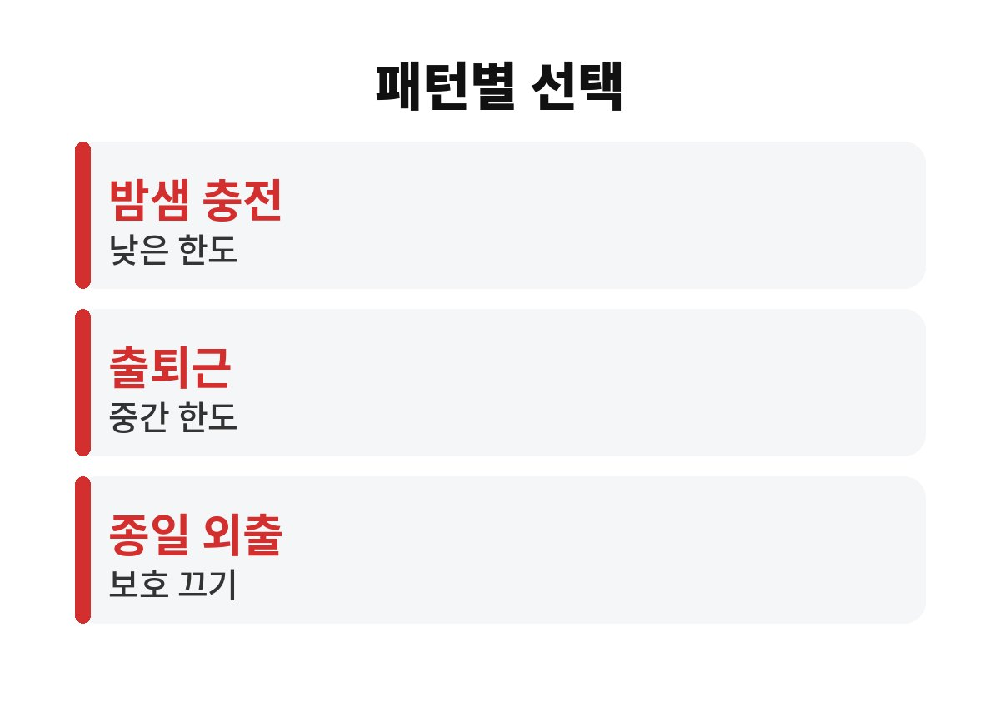
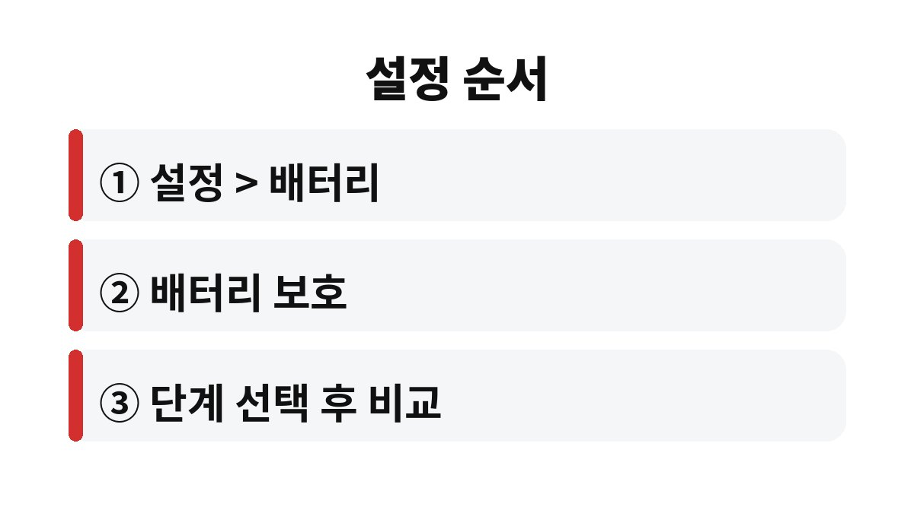

갤럭시 배터리 보호는 설정 > 배터리에서 켜고, 밤새 충전하는 사람은 한도를 낮게, 하루 종일 밖에 있는 사람은 높게 잡는 식으로 고르면 된다.
기능을 켜면 충전이 가득 차기 전에 정해 둔 지점에서 멈춘다.
그래서 어떤 생활 패턴에 어떤 설정이 맞는지가 선택의 전부다.
삼성 안내에 따르면 갤럭시는 충전 한도를 제한해 배터리 부담을 줄이는 배터리 보호 기능을 제공한다.
다만 선택 가능한 한도 단계와 메뉴 위치는 기기 모델과 One UI 버전에 따라 조금씩 다르다.
내 폰에서는 설정 > 배터리 > 배터리 보호 순서로 열어 보면 된다.
충전 한도는 한 번 정하면 끝이 아니라 생활이 바뀌면 다시 조정하는 값이다.
출근길에 폰을 거의 쓰지 않는 사람과 지도와 음악을 계속 켜 두는 사람은 같은 설정을 써도 체감이 크게 다르다.
충전기에 오래 꽂아 두는 시간이 길수록 배터리가 높은 잔량 상태로 머무는 시간도 길어진다.
배터리 보호는 그 시간을 줄여 주려는 장치라고 보면 이해가 쉽다.
| 사용 패턴 | 어울리는 선택 | 감수할 점 |
|---|---|---|
| 밤새 충전기에 꽂아 둠 | 낮은 한도, 수면 중 보호 | 아침 잔량이 조금 적음 |
| 출퇴근 중 보조 충전 | 중간 한도 | 충전 후 사용 시간이 짧아짐 |
| 하루 종일 외부 활동 | 보호 끄기 또는 높은 한도 | 배터리 부담 감소 효과가 작아짐 |
| 여행·행사 당일 | 일시적으로 보호 끄기 | 끝난 뒤 다시 켜야 함 |

충전이 85%에서 멈추는 것을 고장으로 오해해 문의하는 경우가 제법 있다.
삼성 커뮤니티에도 충전이 85%까지만 된다는 질문이 올라와 있고, 대개 배터리 보호가 켜져 있는 경우다.
설정에서 보호를 끄면 다시 가득 충전된다.
폰을 2년 안쪽으로 쓰고 바꾸는 사람이라면 한도 때문에 줄어드는 사용 시간이 더 아깝게 느껴질 수 있다.
나는 하루 사용량이 많은 날에는 오히려 보호를 끄고, 집에 오래 머무는 주말에만 켜 두는 쪽이 편했다.
충전기를 꽂아 둔 시간이 긴 사람일수록 한도를 낮춘 효과를 체감하기 쉽다.
반대로 충전 시간이 짧고 자주 쓰는 사람은 한도를 낮춰도 얻는 것이 적고 잔량 부족만 느낄 수 있다.
가족과 함께 쓰는 공용 태블릿처럼 늘 꽂아 두는 기기라면 보호를 켜 두어도 불편할 일이 거의 없다.

메뉴 이름이 달라 찾기 어렵다면 설정 검색창에 배터리 보호를 입력하면 바로 나온다.
단계 이름이 보이지 않는 구형 기종은 한도를 직접 고르는 항목 없이 켜기와 끄기만 있을 수 있다.
단계를 바꾼 직후에는 충전 중이던 잔량이 바로 달라지지 않을 수 있으니 한 번 완전히 충전해 보고 확인한다.
배터리 보호는 충전 방식을 바꾸는 기능이라 하루 사용 시간 자체를 늘려 주지는 않는다.
충전은 85%에서 멈추는데 오후만 되면 바닥이라면 화면 밝기, 백그라운드 앱, 배터리 사용량 순위를 같은 메뉴에서 먼저 본다.
그래도 부풀거나 갑자기 꺼지는 증상이 있다면 삼성전자서비스 점검을 받는 것이 안전하다.
새 폰이라면 처음 한두 주는 앱 설치와 데이터 이전 때문에 배터리가 평소보다 빨리 닳는 것도 흔하다.
그 기간에는 설정을 자주 바꾸지 말고 같은 조건으로 며칠 지켜본 뒤 판단한다.
배터리 사용량 화면에서 특정 앱이 유독 높게 나온다면 그 앱의 백그라운드 사용 제한부터 걸어 본다.
화면 밝기를 자동으로 두었는지도 같이 확인하면 원인을 좁히기 쉽다.
오늘 밤 충전하기 전에 설정 > 배터리 화면을 한 번 열어 현재 어떤 단계로 되어 있는지만 확인해 두면 된다.
그다음 일주일 동안 아침 잔량을 메모해 보면 내게 맞는 한도가 보인다.
설정이 맞지 않으면 언제든 같은 화면에서 되돌릴 수 있으니 부담 없이 바꿔 봐도 된다.
참고 자료: 삼성전자서비스 「배터리 보호 기능 안내」(2026년 11월 확인)
※ 2026년 기준 공식 안내를 바탕으로 정리한 글이며, 기기·앱 버전에 따라 메뉴 이름이 다를 수 있다.